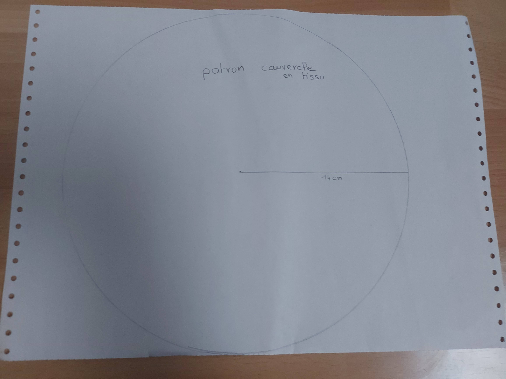
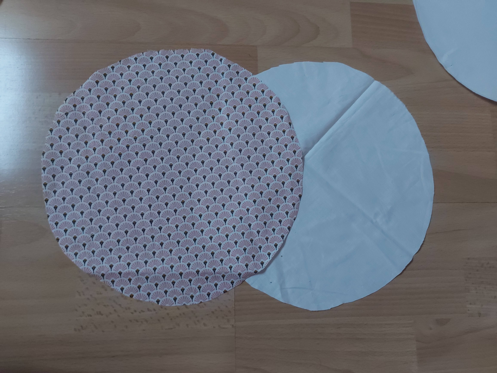
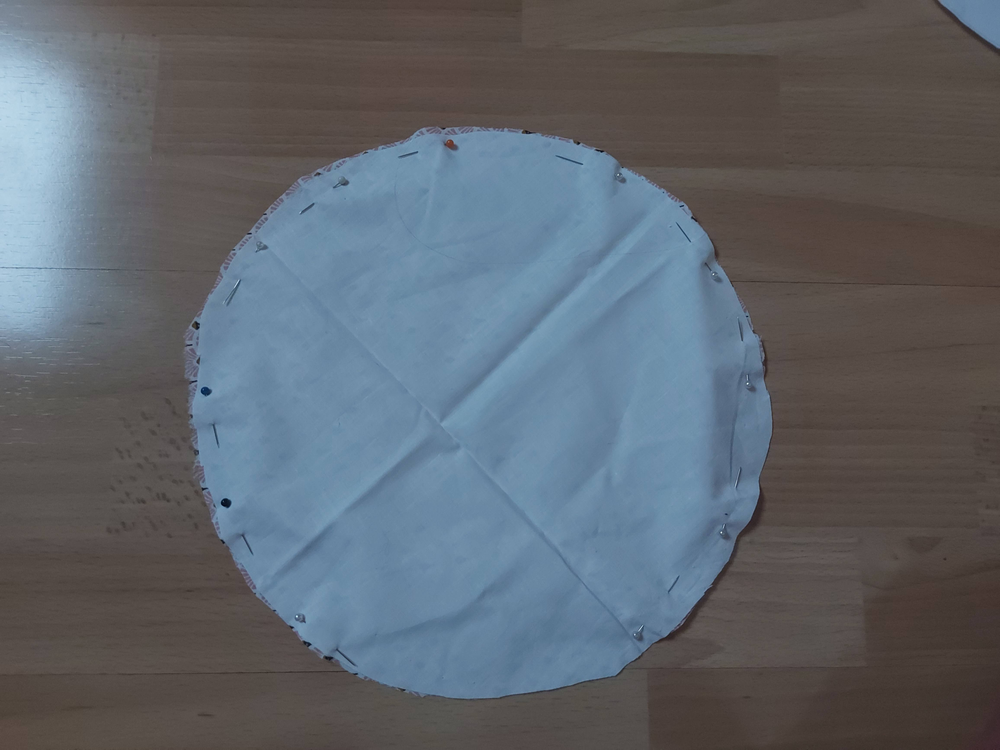
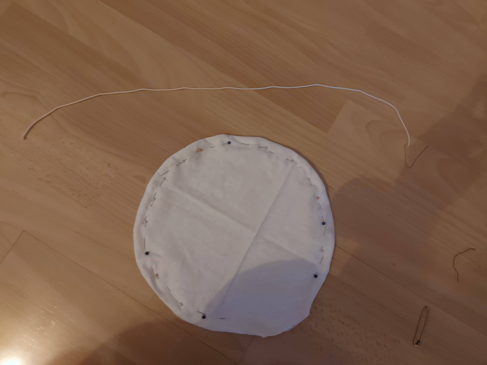
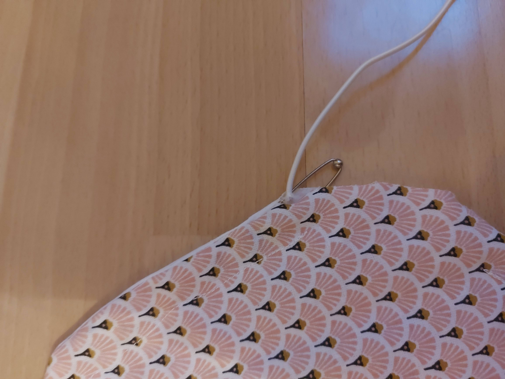
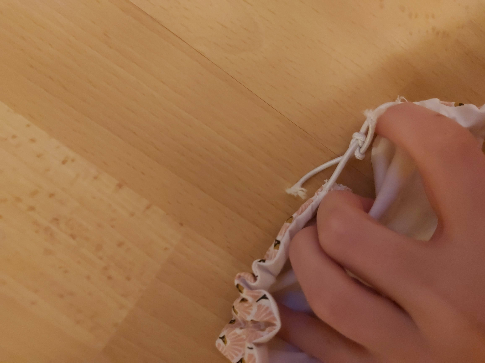

Envie de diminuer votre utilisation de film plastique? Ce tuto est fait pour vous!
Matériel nécessaire :


Etape 1:
Realisez le patron de votre couvercle. Pour cela tracer un cerlce du diametre de celui de votre plat+8cm. Ici 28cm soit un cerlce de rayon 14cm.

Etape 2:
Decouper dans le tissue principal et dans celui de la doublure deux cerlces a partir de votre patron.

Etape 3:
Positionner vos deux cerlces endroit contre endroit. Faites une coututre au point droit tous le tour en laissant une ouverture d'environ 7 cm. Rtournez votre tissu par l'ouverture.

Etape 4:
Une fois retourné faire une couture a environ 1.5cm du bord pour laisser passer l'élastique, en laissant toujours une ouverture de 7cm. Nous avons creer une fente.

Etape 5:
Une fois la fente creé faites y passer l'élastique grace a une epingle a nourrice.

Etape 6:
Faites un noeud avec les extremités de l'élastique pour le fermer. Puis fermer les ouvertures au point droit.
Etape 7:
Et ... c'est fini !!!

Donner nous votre avis
partager vos créations !
Et bientot vous pourrez nous envoyer vos photos ...